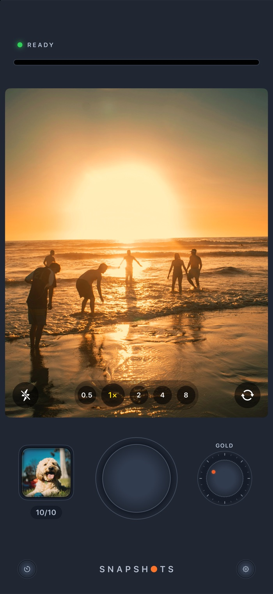
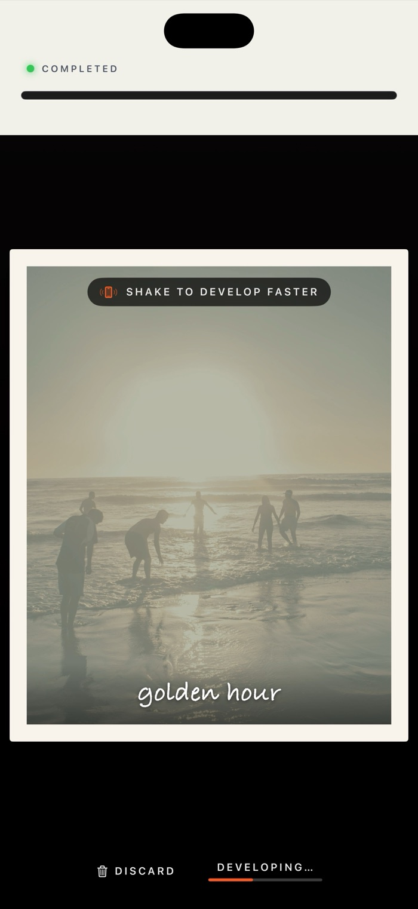
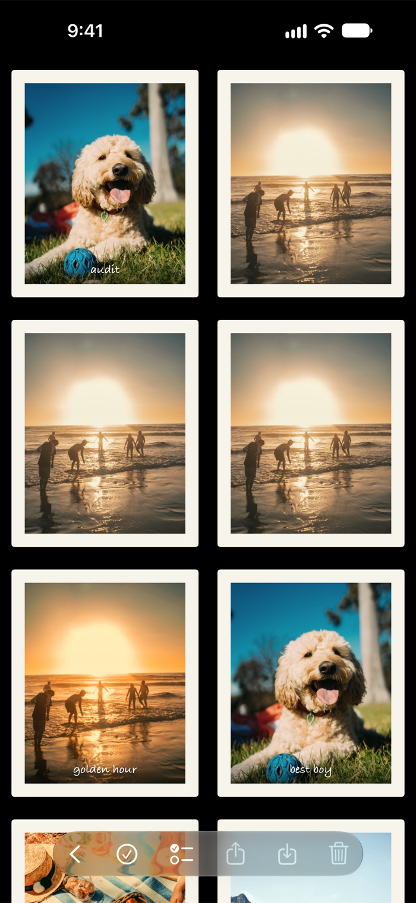
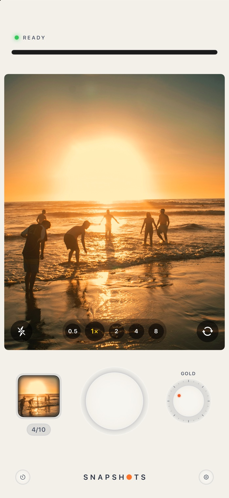

The camera
A real camera body
A big shutter, a film dial, and a counter for your pack of ten.
Snapshots turns your iPhone into an instant camera. Press the shutter, watch your photo print and develop, then write on it and keep it.
Instant cameras made you wait for the picture. Snapshots brings that back, right down to the sound of the printer.
The viewfinder is the shape of the print, so what you see is what you get.
The printer whirs and your photo feeds out of its slot.
The picture fades up like instant film. Shake your phone to hurry it along.
Write a caption across it, then save it to your gallery or throw it away.
One screen to shoot, one moment to wait, and a print to keep. No feeds, no filters to scroll through, no settings to learn.

A big shutter, a film dial, and a counter for your pack of ten.
It sits across the top of the screen and feeds out every photo you take.

Milky at first, then the colours come up. Add a caption in handwriting.

Everything you keep, ready to share or save to Photos.
No floating glass buttons. Snapshots has a camera body, with parts that move the way real ones do.

Turn the dial and the viewfinder changes live, so what you see is what prints.
 golden hour
golden hourToo excited to wait? Give the phone a shake and the picture comes up at once.
Write across the foot of the photo, and a longer note on the back of the print.
On its side, your phone lays your prints out like photographs on a table.
Three or ten seconds. Prop your phone up and step into the picture.
Tap to focus, press and hold to lock, then slide to brighten or darken.
No accounts, no ads, no tracking. Your photos stay on your phone.
 Hey there! 👋🏻
Hey there! 👋🏻I've always been a huge fan of Apple products. I waited in line for the original iPhone, and I still remember the feeling of holding it for the first time: new, exciting and fun, like nothing I'd held before. It felt like the future!
Ever since that day I've wanted to build an app of my own. I just never found a reason big enough to start. iPhone Duo is that reason.
It brings that same feeling back, and inspired me to create something for it straight away. Snapshots is my first app, and the first thing I've ever felt compelled to make and share with the world.
I hope Snapshots gives you a little of that feeling too, and a shoebox full of memories worth keeping.
Ryan Fredericks